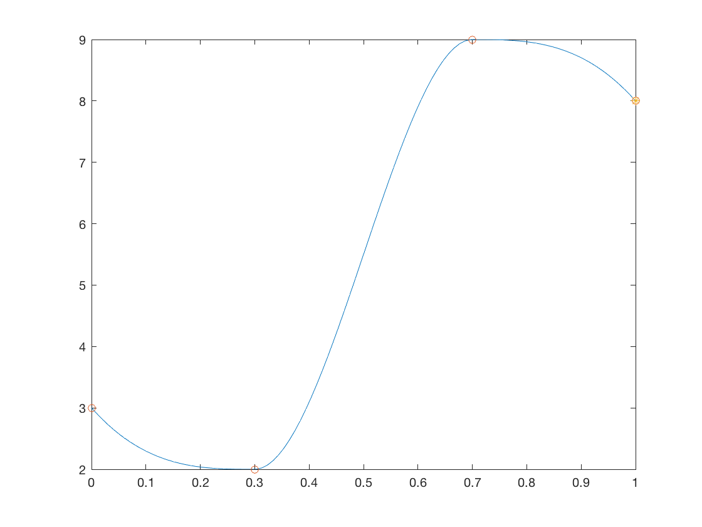
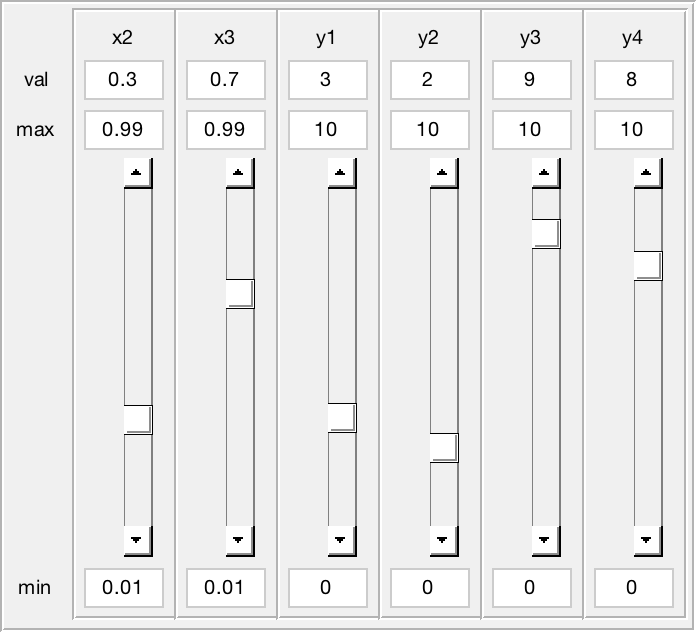

README - Demo of GuiSliders
GuiSliders is a class that greatly simplifies development overhead associated with sliders. The class constructs a uipanel with a user-specified number of sliders. It automatically links editable text boxes to the slider value and bounds. All changes to the slider values are funneled up through a single event. The user need only define one event handler.
Michael R. Walker II 6/21/2017
Contents
Getting Started
A simple interpolation problem is used to demonstrate efficient plot update techniques. We define a class, ExamplePlotter, which services the plot updates and maintains copies of the associated plot handles. We then construct a GuiSliders panel in a separate figure. Finally we link the GuiSliders object to the ExamplePlotter object.
clear; % Reserve separate figures for plot and gui figPlot = figure(1); figPlot.Visible = 'off'; clf; figGui = figure(3); figGui.Visible = 'off'; clf; % Initial control coordinates for interpolation. % Note, we assume x(1) = 0, and x(end) = 1. x23 = [.3 .7]; y = [3 2 9 8];
Configure plotting object
Plotting will be handled by a separate object. Here we construct this object and draw the initial plot.
% Make parent figure active figure(figPlot); % Setup control parameters x0 = [x23,y]; hplotter = ExamplePlotter(x0);
Configure GUI Sliders
Guisliders will be drawn in a separate figure. Here we construct the GuiSliders object and resize the figure window accordingly.
figure(figGui); % Make parent figure active bounds = [repmat([0.01 0.99],2,1); repmat([0,10],4,1)]; labels = {'x2','x3','y1','y2','y3','y4'}; hsliders = GuiSliders(x0,'bounds',bounds,'labels',labels); % Remove most decorations & shrink to panel size set(figGui,'Name','GUI Sliders','NumberTitle','off',... 'DockControls','off','MenuBar','none','Resize','off'); figGui.Position(3:4) = hsliders.Position(3:4);
Link Sliders to Plotting Object
Up until this point changes to the slider values did not affect the plot. The next step registers the callback handler from the plotter class to the GuiSliders object.
addlistener(hsliders,'SliderUpdate',@hplotter.handleSliderUpdate);